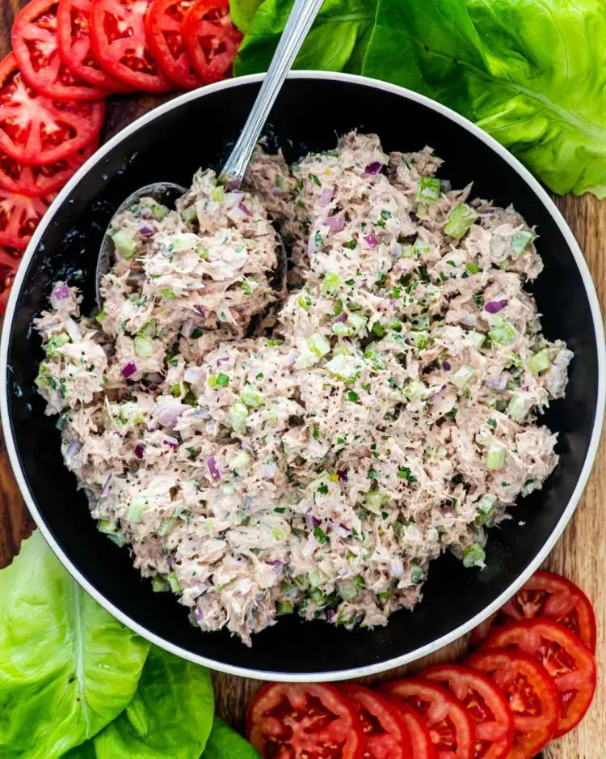

Tuna salad recipe

Description
The following is a quick and healthy tuna salad recipe
Ingredients:
- Canned tuna.
- Mayonnaise.
- Celery.
- Red onion.
- Parsley.
- Half a tablespoon of Dijon mustard.
- Salt and pepper, to taste.
Cooking instructions:
- Drain the tuna.
- Rub together the flour, salt and butter with fingers until it is nice and crumbly.
- Mix all ingredients together whilst breaking up the large pieces of tuna.
- Already done, so enjoy.